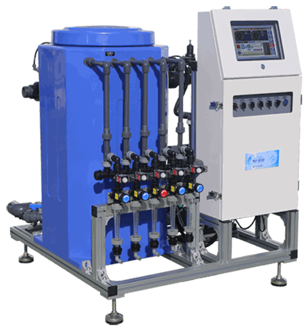

INJECTION MASTER · TCK SERIES
탱크혼합 연속공급 시스템
배양액 자동공급기 › 탱크혼합 연속공급 ›
WIN-9300S
‹
이전으로
⌂
전체 제품
고용량 탱크혼합형
WIN-9300S
최대 300L/분의 공급능력과 270L 8각형 혼합탱크를 갖춘 대용량 배양액 자동공급기입니다.
300L
최대 공급/분

정면
후면
펌프측
제어반측
핵심 기술과 운용 장점
컴퓨터 정밀제어
TCK22가 센서와 설정 조건을 종합 연산
벤추리 독립순환
흡입·혼합과 현장 공급을 분리한 2중 펌프 구조
EC·pH 정밀관리
50년 이상 수질센서 전문기업 Sensorex 센서 적용
다양한 자동공급
시간·복합제어와 유량·시간 단위 공급
12구역·2그룹
재배 환경에 맞춘 구역·그룹별 순차 공급
데이터·원격관리
약 20년 기록 저장과 인터넷 원격 확인·제어
02
제품 사양
전원·펌프·크기·출력
›
03
주요 구성품
펌프·밸브·센서
›
04
제어·데이터 관리
TCK22·운전·저장 데이터
›
05
네트워크 연계
센서·인젝션 매니저
›
06
설치·배관 확인
전원·접지·필터·배관
›
07
점검·안전 안내
펌프·밸브·센서 점검
›
×